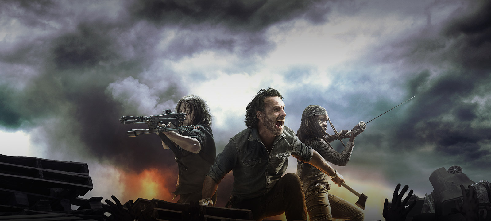

The Walking Dead
voltar Um apocalipse provoca uma infestação de zumbis na cidade de Cynthiana, em Kentucky, nos Estados Unidos, e o oficial de polícia Rick Grimes (Andrew Lincoln) descobre que os mortos-vivos estão se propagando progressivamente. Ele decide unir-se aos homens e mulheres sobreviventes para que tenham mais força para combater o fenômeno que os atinge. O grupo percorre diferentes lugares em busca de soluções para o problema.
Noticia adptada de - adorocinema.com| Temporadas | Nota | Gênero | Episódios |
| 5 | 9.5 | Drama | 62 |
Principais Personagens
Rick Grimes Antes do apocalipse zumbi, Rick foi um xerife na pequena cidade americana de Cynthiana, Kentucky, sem nunca ter visto muita ação. Enquanto estava em um tiroteio, junto ao seu sócio e melhor amigo Shane Walsh, contra um prisioneiro que tivera escapado da prisão, Rick foi ferido e, posteriormente, acorda do coma. [...]
Interpretado por: Andrew Lincoln
Criador: Robert Kirkman
Daryl Dixon é o irmão mais novo de Merle, um caipira insensível do sul dos Estados Unidos. Quando jovens, perderam a mãe num incêndio provocado pelo cigarro que ela fumava. Daryl foi membro do grupo de Atlanta e um dos maiores especialistas em armas de caça. Era caçador antes dos zumbis aparecerem e alimentava o grupo com a caça de animais. A arma de Daryl é uma besta valiosa devido à propriedades furtivas como munições reutilizáveis e baixa emissão de ruído. Inicialmente, é hostil com Rick e T-Dog ao ser informado de que Merle foi deixado para trás por tornar-se uma ameaça ao grupo. [...]
Interpretado por: Norman Reedus
Criador: robert kirkman
Negan aparenta casualidade e alegria, mas esconde um homem selvagem com traços severos de psicopatia. Extremamente racional, possui um talento especial para controlar e manipular a mente das pessoas. Ele tem uma forte afinidade com linguagem profana e comentários ofensivos e um sentido mórbido, perverso de humor.
Apesar de sua natureza violenta e selvagem, Negan pode ser muito razoável por questão de praticidade, como quando ele poupou a vida de Carl para manter relações estáveis com Rick, apesar de Carl ter abatido muitos dos seus homens. [...]
Interpretado por: Jeffrey Dean Morgan
Criador: robert kirkman
Carl Grimes começa como uma criança normal e inocente, mas como os eventos da nova ordem mundial forçá-lo a crescer, ele se torna mais frio e competente toma decisões ousadas, às vezes para o bem de seu grupo de amigos. Ele é um dos sobreviventes mais longas de vida desde que a série lançados, ao lado de Rick, Andrea, Maggie Grenne e Sophia Peletier. [...]
Interpretado por: Chandler Riggs
Criador: robert kirkman
Maggie Greene é a filha do meio de Hershel, uma jovem rebelde e independente, mesmo abandonando a faculdade. Ela, sua família e seus amigos estavam barricados dentro da fazenda por Hershel e ficou isolada, dependendo unicamente de seus recursos para casa sem saber o que estava acontecendo no mundo exterior. [...]
Interpretado por: Lauren Cohan
Criador: robert kirkman

Carol Peletier era uma dona de casa vítima de intensa violência doméstica, vinda de seu marido, Ed Peletier. Ela frequentemente evitava confronto com Ed, na tentativa de abafar a sua ira, embora ela secretamente orou a Deus pedindo que ele fosse punido por abusar dela e ter tentações sexuais em direção a sua filha, Sophia. [...]
Interpretado por: Melissa McBride
Criador: robert kirkman
Doctor Eugene Porter faz sua primeira aparição ao lado de seus companheiros de viagem Abraham Ford e Rosita Espinosa. Eles encontram Glenn e Tara no meio da estrada e pedem ajuda a eles. Eugene se diz ser um cientista que sabe o que causou a epidemia e sabe como acabar com a mesma. [...]
Interpretado por: Josh McDermitt
Criador: George R. R. Martin
Criador: robert kirkman
Tara Chambler vive em Atlanta com a sua irmã, April, e seu pai, David. Eles vivem num apartamento de um prédio ainda em segurança. April salva um grupo de pessoas que está sendo perseguido por zumbis, chamando-os para o prédio. [...]
Interpretado por: Alanna Masterson
Criador: robert kirkman